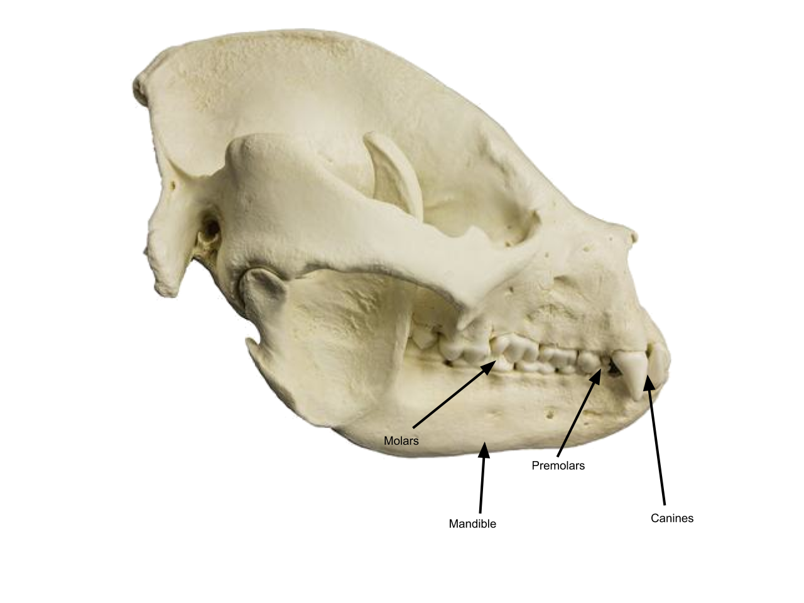
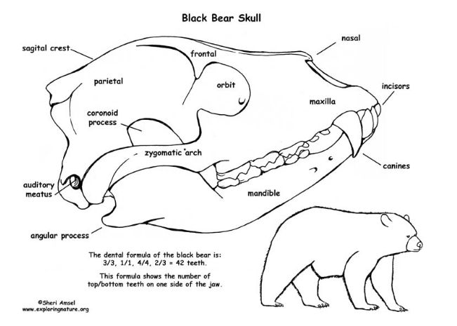
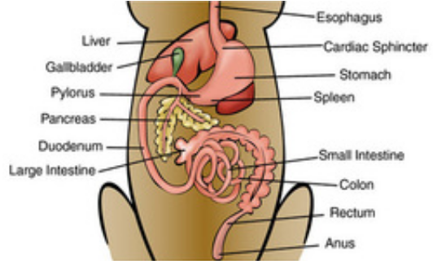
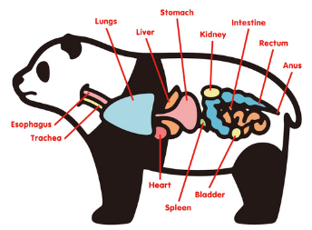
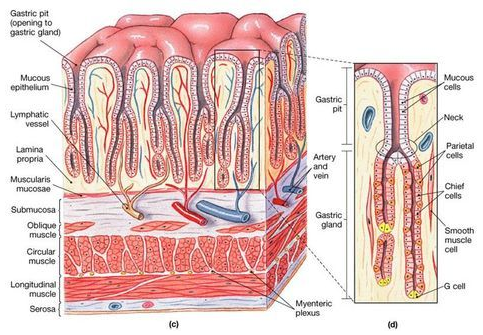
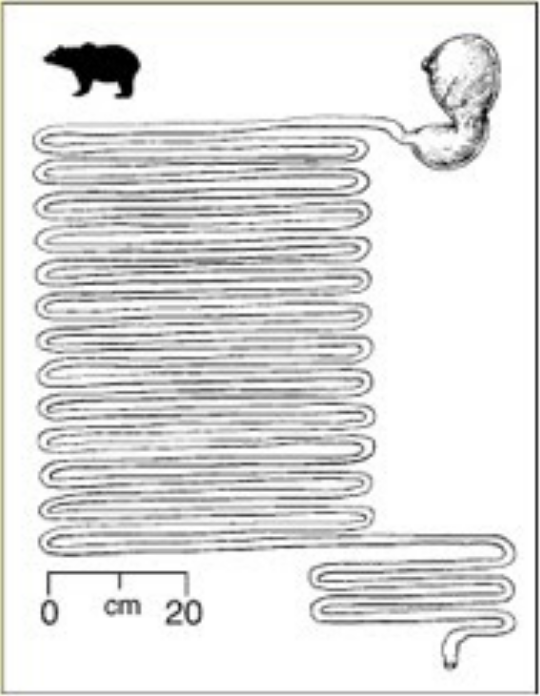

Giant Pandas | Body Systems
This page is meant to teach you about how a panda's body works, and how it is important to how the animal lives.
Links to pages
Introduction to Body Systems
The importance of this performance task is learning how body systems work and how their individual parts can interact with one another and act as a cohesive entity. It’s important to understand how animals like our focus animals work, not only in case we go into a career path where that knowledge is necessary but also to gain a general understanding of how animals, like we humans, work. Understanding how natural processes brought about systems like the digestive system or the dentition of animals that exist today can not only help us know more things, but it can also help us improve skills like problem solving and thinking outside of the box. These are patterns that we as humans come to understand and replicate, and sometimes even improve on. Like that of a bird, replicating it to create air travel. While our goal with this project is to explain our understanding of how the digestive structure and internal organs of animals work, we have a bigger goal today of learning about how animals in general work, and applying parts of that knowledge to other fields.
Part 1: Structure of Jaw/Skull
Mammals of the order Carnivora (such as the giant panda) almost always have structures that would allow them to consume animal matter. Pandas, however, are well known to eat bamboo. Giant pandas (at least by my classification) are omnivores, due to their ability to eat animals as well. Despite the fact that bamboo makes up almost 100% of their diet, they still have everything necessary for them to eat animals. For example, they have canines. Canines are used to rip through flesh and muscle material, and are almost completely necessary for the consumption of meat. As I said earlier, though, they are omnivores, meaning they also consume plant matter, This is a part of the reason that they have premolars and molars. These are necessary for consuming plant matter, and since pandas do not have a restrictive skull and jaw structure, they can consume both meat and plant matter. Their mandible allows them to bite down hard enough to tear through meat, and are able to chew in a manner that allows them to break apart plant matter. The molars/premolars also help turn any food into the bolus to be digested.
(This was a black bear skull, but it will do for the sake of comparison)
Part 2: Digestive Tract
Although pandas are known to eat bamboo, as I mentioned earlier, they actually have the digestive system of a carnivore. This puts them in a special position; while they do have the ability to consume plant matter, their organs are more fit for eating meat, which means that they do not have the proper organs in their digestive system to digest cellulose. What this means is that pandas derive little nutrients from their diet. On the other hand, while their bodies are fit to eat meat, it is very hard for them to do so, being that they are slow and not readily able to catch smaller prey, because they derive very little from their bamboo. Due to this, they rely solely on a source that doesn’t provide them with much. Furthermore, because of this unique situation, they don’t have many unique digestive organs. However, it would be necessary for them to have some sort of digestive enzymes that not only work on meat but also plant matter. Knowing that there are multiple places where digestive enzymes would be, it’s very likely that, despite the fact that their organs aren’t prepared to digest cellulose, they at least have some sort of enzyme that allows them to derive some energy from plants. We know that they are able to get something from animal matter because they have certain qualities that imply they would be (long small intestine, small/no cecum, short but wide large intestine, things shared with other carnivorous mammals) and that they are also known to sometimes eat small animals, such as bamboo rats. Again, their diet consists almost entirely of bamboo, so they have to be able to derive at least some nutrients from it, even if very few. Generally, carnivores do not have digestive enzymes within their saliva, but since pandas eat basically only bamboo, their saliva might have enzymes to help break down. Next, pandas do have some small evolutionary adaptations that help them digest bamboo. Though not many, they definitely do play a part in the panda’s digestion. Because bamboo is similar in many ways to wood, it can be hard to eat. This means that even the soft bamboo shoots that the panda eats would be almost impossible to use as a food source if it weren’t for certain adaptations the panda has. A tough throat and esophagus means that their throat won’t be hurt by the bamboo which could possibly be fragmented in a way that creates sharp edges. They also have a thick stomach lining and enlarged colon surface, but I’ll get to those in part 4. Although these adaptations don’t do much to give the panda an advantage when it comes to nutrition, they not only allow it to survive, they also give us small tidbits of information relative to the panda’s evolutionary history. Because they have a digestive system that is similar to that of a carnivore, yet still have some adaptations that help them survive on bamboo, they obviously split off from the rest of the bear family in recent history (high tens of thousands to low hundreds of thousands of years ago). This can also be inferred from the geographic information about these animals. That just goes to show how some things as seemingly random as digestive tract biology can relate to much larger subjects and teach us a lot.
Part 3: Organs and How They Work Together
We’ve already explored the stomach and intestines, and we’re going to talk about them in more detail within part 4 & 5. Right now, I’m going to describe the smaller and less known organs: the liver, gallbladder, and pancreas. These three organs all play a big part in digestion, for not just pandas, but almost all mammals. Firstly, the liver is important because it produces bile. Bile is stored in the gallbladder, and is used in the small intestine to digest lipids. It plays a large role in any animal’s digestive system, and is necessary for digestion of a lot of different foods. However, the liver’s role is not limited to bile production. In addition to creating bile, the liver also helps metabolize the three primary macronutrients/macromolecules (lipids, proteins, and carbohydrates). It also has a large role in the panda’s diet specifically, being that it stores glycogen. Glycogen, as we went over in one of our macromolecules activities, is a carbohydrate which contains a lot of glucose, and is stored for future use. Because the panda relies on plants mainly for its food source, it needs to use carbohydrates a lot of the time as its primary fuel. This means that it not only produces bile, which helps it digest lipids, but also stores carbohydrates for the panda’s energy needs. Next, the liver is also responsible for producing vitamin A, which is important to a lot of different organisms but has no specific function for digestion. Finally, the liver is important for maintaining blood. Not only does the liver help regulate blood sugar, but it recycles old blood cells and creates fibrinogen, a protein that helps clot blood. The next organ in line is the gallbladder. As I mentioned earlier, its primary function is storing bile, which is used to digest lipids. It concentrates bile and then releases it into the digestive system. Although the gallbladder doesn’t do many things, its importance shouldn’t be underestimated. Bile is basically necessary for the digestion of lipids, and concentrating and releasing bile is no small task. While it seems and arguably is less important than the liver, it still plays a huge role in the digestive tract. The third and final organ is the pancreas, which shares some things in common with the other organs. It secretes pancreatic juice, a fluid that contains a variety of enzymes, and like bile, helps break down macromolecules. The difference between the two, however, is that pancreatic juice not only breaks down lipids, but also proteins and carbohydrates. It helps assimilate them into the bloodstream, which is very important in that it’s basically the thing that keeps any animal’s body functioning. Its next function is to produce insulin, which you may have heard of. The function of insulin is to regulate blood sugar. You might be thinking, “doesn’t the liver already do that?” And yes, the liver does also help to regulate blood sugar. This gets into my next point. All three of these organs go together in a very important way, almost like a sandwich. The liver has the most functions, and provides the other organs with assistance or materials. It produces bile for the gallbladder, and helps the pancreas regulate blood sugar. And like the gallbladder, the pancreas secretes a fluid important to the process of breaking down different parts of food for the body to use. These three organs are not only important independent of one another, but also function with one another to fill up an important niche in the body. Almost as if they were three interconnecting parts of a machine, three cogs, playing an important role in fulfilling their functions.
Part 4: Stomach/Intestinal Cells
Although I can’t find a specific diagram for the panda, or any bear for that matter, I can use this one for humans since we do share some features in common with pandas. As seen above, the uppermost region of the lining is where the mucosa are. This is where everything within the stomach (the bolus, acid and enzymes) are closest to. This part has gastric glands connected to it with many different types of cells for producing enzymes necessary to digestion. For example, the mucous cells, parietal cells, chief cells, smooth muscle cells, and g cells. They all produce substances which do anything from maintaining the stomach lining to activating and limiting the stomach acid. Next is the muscle layer. This has multiple different sections with different structures of muscle cells, and they are all important and have a function. As I mentioned earlier, the panda has a thick stomach lining, and this is primarily made up in the gastric pit and muscle layer. What this means is that there is a higher concentration of stronger muscle cells. This is important because it allows them to consume something like bamboo without worrying about their stomach lining breaking apart or ceasing function, because of the toughness of bamboo. If they did not have a thicker stomach lining, their bodies would not be able to process the bamboo because of its tough nature, and they have to have certain cell secretions within the gastric gland to deal with the bamboo. It is also important for the muscles and outer layer to protect other parts of the stomach lining and other organs. If these layers weren’t thick enough to deal with bamboo, it could possibly harm the veins and arteries within the stomach lining. Although there are more parts to the stomach lining, they aren’t as important in dealing with the digestion of bamboo. On top of that, with most animals in mind, the outer layer and muscle layer are easily the most important to the stomach lining. The outer layer has to deal with the food and acid while the muscle layer is used to “beat up” the bolus to prepare it for other digestive enzymes and ready it to be carried through the rest of the digestive tract.
Part 5: Digestive Tract Diagram
If not to go by relation, pandas and black bears both have barrel-shaped bodies, an indication of a long small intestine. They also both have similar enough digestive systems other than that, with their esophageal structure, stomach, and other digestive organs being almost identical. We know that even though pandas are fit for digesting animal matter, they generally rely on plant matter. This means that there would likely be some sort of (at least) small cecum and large intestine with a larger surface area within the panda’s digestive tract. What we can see in the diagram above is that the bear has a small intestine of about 1440 cm (on my first count), or about 15 meters in length. This is a seriously long small intestine. My best guess is that a panda would have some additional small cecum at the end of the small intestine, even though it isn’t depicted in the diagram. Because of the counterintuitive nature of the panda’s diet, it likely wouldn’t have a digestive system way too similar to an herbivore, because its body doesn’t process plant matter well. Seeing as the panda is considered an omnivore (as is the black bear) it makes sense that they would have similar digestive systems. The small intestine is generally shorter in carnivores because cellulose takes longer to digest, but because of how large bears are, they still have a very long small intestine. Furthermore, bears are omnivores and thus need to have digestive tracts that fit both meat and plant material. That is likely why they have long small intestines, even though their body in general fits with meat digestion better. Bamboo specifically is not very efficient when it comes to energy, and pandas specifically are not efficient at digesting it. This is an interesting combo, and would definitely necessitate a long small intestine. Finally, relating to my diagram from earlier, we can see that the cecum from the panda is small, and it has a wide large intestine. If we use some rough averages, the cecum’s size comes out at about 1% of the total length, and large intestine being probably about 5%. This leaves the small intestine at around 94%. This ties back to the panda’s diet. Because they have a digestive system meant for eating meat, they have a small cecum. But because they are able to digest both meat and plant matter, they have a long small intestine. It shows that their bodies are almost an amalgamation of different aspects of different animals, with a small cecum but a long small intestine. As I said earlier, it’s truly counterintuitive, but it somehow allows them to function. This project leads me to see what a wonder animal biology can be.